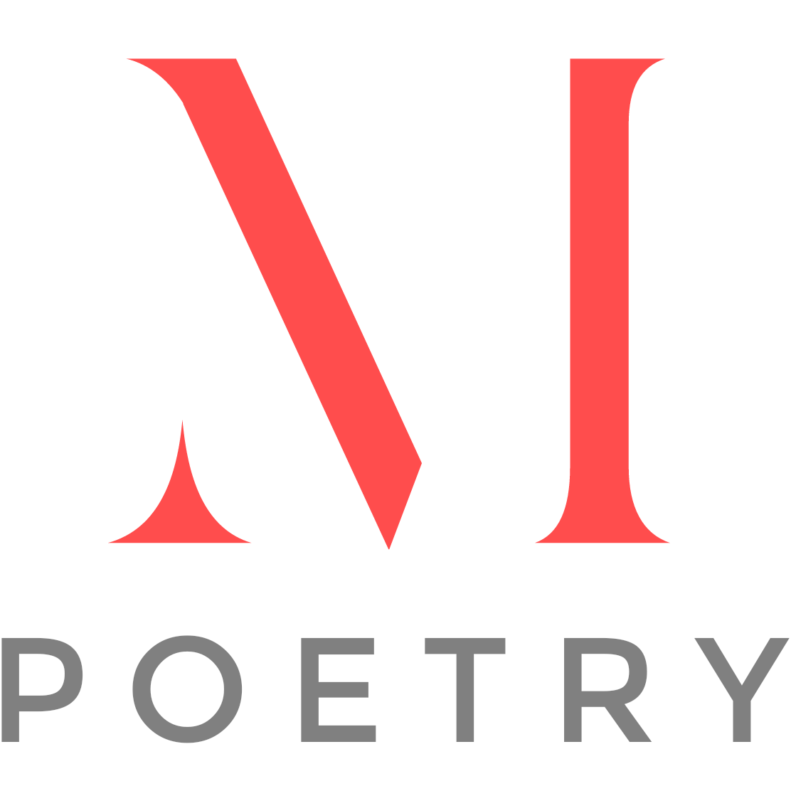

Welcome to Imannpoetry
What is Poetry ?

Poetry according to me,
is not just a few lines of art, but it is a mixture of a million feelings
anda billion unsaid words compressed together and expressed on a piece of paper.
Poetry is describing our love for something or somebody.
Poetry is an ocean of thoughts created by a heart.
Definition of Poetry
According to wikipedia, poetry is a form of literature that uses aesthetic and rhythmic qualities of
language—such as phonaesthetics, sound symbolism, and metre—to evoke meanings in addition to,
or in place of,
the prosaic ostensible meaning.
 Poetry Vs Other Texts
Poetry Vs Other Texts
The photo on the right shows how poetry affects the heart
and brain of the reader in comparison to other texts. By reading
a poem,
a reader can directly read the heart of the writer but in the
case of
other texts, first we need to use our intellect to understand
the text,
and only then can we understand what's in the heart of the writer.